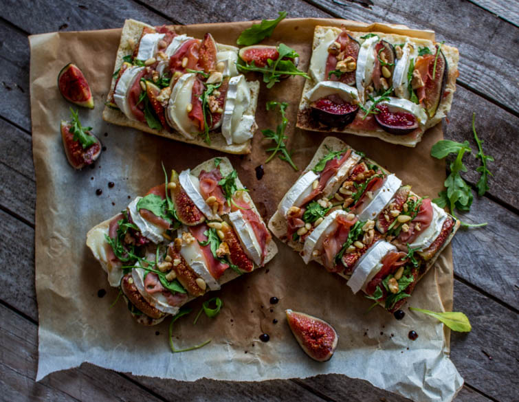
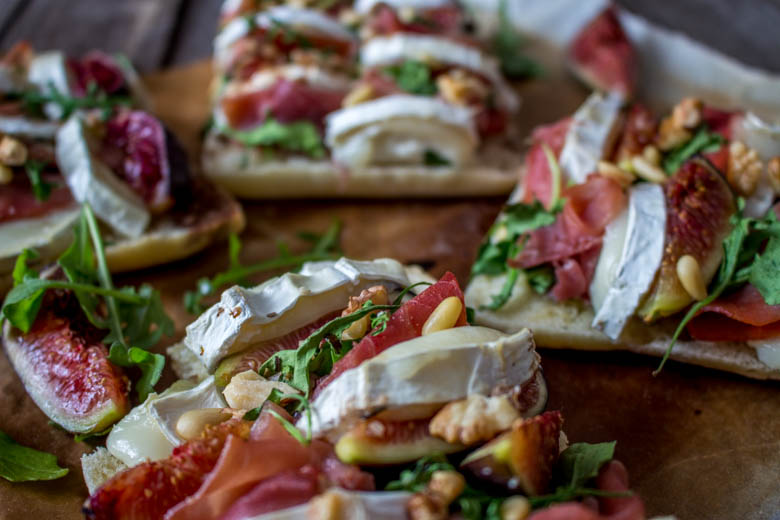

Délicieuses bruschettas ou gourmandes tartines aux figues

Ici vous trouverez quoi faire de vos figues et notamment de délicieuses bruschettas.
Je ne sais pas vous, mais moi j’ai l’impression que l’on est totalement décalé dans les saisons et quelque part je pense secrètement aimer ça (je n’aime pas l’entrée en hiver avec le ciel qui devient tout gris, le moral aussi et la pluie qui fait la fête au dessus de nos têtes) ! Certes, il n’a pas fait bien beau au mois d’août mais ce mois de septembre est tout simplement magnifique ! Du coup, j’ai encore envie de manger de bons petits plats aux saveurs estivales ! Ça tombe très bien car je trouve en ce moment des figues un peu partout et les figues fraîches j’adore ça alors ça tombe très bien!
Étant donné que mon chéri adore les bruschettas je me suis dit que j’allais un peu changer de ses tartines préférées et lui en faire de nouvelles! Je n’avais jamais fait de tartines sucrés-salés auparavant et je regrette car c’est vraiment délicieux!
Je me pose souvent la question du titre que je dois donner à ces articles Bruschettas?Tartines?… Enfin de compte mon ami Google m’a répondu que c’était plus ou moins la même chose alors je l’appellerai bruschetta !! Les bruschettas, sont des tartines de pains grillés (ok on est bons) garnis de tous pleins d’ingrédients (on est toujours bons) qui font fureur en Italie! Je dirais donc qu’en France les brushettas sont tous simplement appelées « tartines ». Il en existe des froides, chaudes, salés, sucrés-salés etc… mais toutes aussi gourmandes les unes que les autres!
Vous pouvez d’ailleurs retrouver les préférées de mon chéri ici sous l’appellation tartines 😉 et pour les plus courageux, vous pouvez retrouver la recette de pains ciabatta ici que j’utilise pour faire mes tartines!
Les brushettas que je vous propose aujourd’hui sont à la figue, au fromage de chèvre, au jambon de parme, à la roquette le tout parsemé de noix, de pignons de pins et de quelques gouttes de vinaigre balsamique! Bref une vraie tuerie !!
Assez bavardé pour le moment et place à la recette!
Ingrédients
- Figues (dépend de la taille) - une dizaine de taille moyenne
- Jambon de parme - 6 tranches
- Bûche de chèvre - 1
- Pains ciabatta - 4 petits
- Roquette
- Huile d'olive
- Vinaigre balsamique
- Thym
- Noix
- Pignons de pins
Instructions
- Préparer vos ingrédients : Couper les figues en 4 dans le sens de la longueur ou en 8 selon la taille de vos figues Couper la bûche de chèvre en rondelles Couper le jambon en morceaux grossiers Réserver
- Couper les pains en deux dans le sens de la longueur
- Verser un filet d'huile d'olive sur les pains et saupoudrer d'un peu de thym
- Préchauffer le four à 150°
- Commencer à placer vos ingrédients en alternant successivement les différents aliments Moi j'ai alterné : chèvre, jambon, roquette, figue ainsi de suite... (voir photo)
- Enfourner environ 5 à 8 minutes à 150° le temps que le fromage fonde et que le pain soit chaud
- A la sortie du four, parsemer de quelques cerneaux de noix et de pignons de pins
- Pour finir, verser quelques gouttes de vinaigre balsamique au dessus de vos bruschettas (les plus gourmands comme moi pourront rajouter un filet de miel)


Les tips de la communauté
Bruschettas très appréciées pour la combinaison gourmande de saveurs sucrées-salées. Visuellement très attrayantes avec les figues et le chèvre. Recette simple et rapide, idéale pour l'apéritif.
Astuces
- Accompagnement à l'aubergine possible en variante
- Le contraste sucré-salé avec le chèvre et les figues fonctionne parfaitement